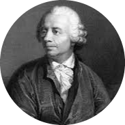

|  |
Leonhard EulerA Swiss mathematician, physicist, astronomer, geographer, logician and engineer. He founded the studies of graph theory and topology and made pioneering and influential discoveries in many other branches of mathematics such as analytic number theory, complex analysis, and infinitesimal calculus. He introduced much of modern mathematical terminology and notation, including the notion of a mathematical function.[3] He is also known for his work in mechanics, fluid dynamics, optics, astronomy and music theory. |
| born | 1707 |
| died | 1783 |